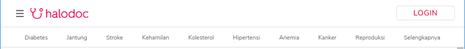
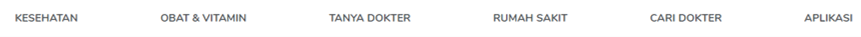
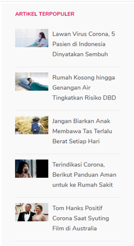
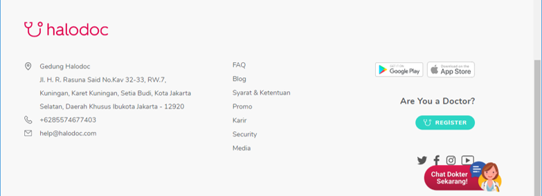

Sebelum mulai berselancar di Rose Clinic, Sebaiknya kenali dulu struktur website nya.
Tak kenal maka Tak sayang !!
1. Header
 Header Rose Clinic Isi dari menu Hamburger
Header terdiri dari menu Home, Kesehatan, Obat & Vitamin, Tanya Dokter, Rumah Sakit, Cari Dokter, Aplikasi , Login . Juga terdapat sub-menu yakni Diabetes, Jantung, Stroke, Kehamilan, Hipertensi, Kolestrol dsb nya.
Menu Home merupakan halaman awal dari Rose Clinic. Pengguna dapat menemukan berbagai Informasi terbaru dari Rose Clinic di halaman ini. Menu Kesehatan merupakan halaman dimana Pengguna dapat mencari dan melihat berbagai informasi terkait penyakit. Menu Obat dan Vitamin merupakan halaman yang dapat digunakan pengguna untuk melihat resep obat serta vitamin dari Rose Clinic untuk berbagai penyakit. Menu Tanya Dokter merupakan halaman Tanya jawab dengan Dokter di Rose Clinic, Pengguna dapat berkonsultasi dengan dokter sesuai dengan gejala yang pengguna alami. Namun untuk menggunakan fitur ini, Pengguna harus login terlebih dulu.
Menu Rumah Sakit merupakan halaman dimana pengguna dapat melakukan pencarian Rumah Sakit terdekat berdasarkan wilayah maupun berdasarkan nama rumah sakit, dan juga Pengguna dapat membuat janji konsultasi dengan dokter yang di tunjuk oleh rumah sakit tersebut. Selain itu , Pengguna juga bisa mencari rumah sakit berdasarkan poliklinik yang dimilki oleh rumah sakit tersebut. Menu Cari Dokter merupakan halaman dimana pengguna dapat mencari dokter untuk kebutuhan medis tertentu. Pengguna dapat mencari nya berdasarkan nama, berdasarkan spesialisasi nya ataupun berdarkan lokasi terdekat.
Menu Aplikasi merupakan menu dimana pengguna dapat mengunduh aplikasi Rose Clinic untuk digunakan secara mobile. Menu Login merupakan menu dimana pengguna dapat melakukan login dan berinteraksi dengan sesama pengguna lainnya.
2. Sidebar
Sidebar berisi berbagai Artikel Populer yang sering dibaca oleh pengguna Rose Clinic.
3. Konten
Konten berisi berbagai informasi terbaru dari Rose Clinic. Termasuk berbagai promosi yang ada di Rose Clinic.
4. Footer
 Footer Rose ClinicFooter memuat informasi dari Rose Clinic, yakni informasi alamat dan nomor telepon. Juga terdapat floating menu untuk Tanya Dokter agar Pengguna dapat bertanya dengan cepat tanpa harus scroll ke header.